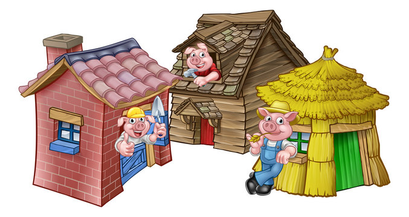
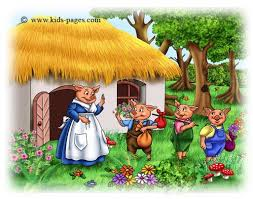

Once upon a time, there lived an old mother pig. She had three little pigs. One day she decided to send them on their way to lead their lives on their own. “Go and seek your own destiny and fortune” the mother said, and the little pigs went their ways. The first pig was very lazy. “I’ll build my house with straws”, he decided as he chose the easy way. He got the straw from a farmer and started building. The second pig said “I will make my house with sticks.” He got the sticks from a woodcutter and began building. The third pig was laborious and intelligent. “I will make my house using bricks” he said, and got the materials from a builder pushing a cart of bricks. The other two pigs said, “You do it your way, and we will make our houses our way. Anyways, those bricks look very heavy. So much labour and so much work – not for us. You continue.” They ignored his advice and constructed their houses the way they wanted. Soon, all three pigs built their houses and were pleased about it.
© 2023 Pigs Story Copyright All Rights Reserved
 